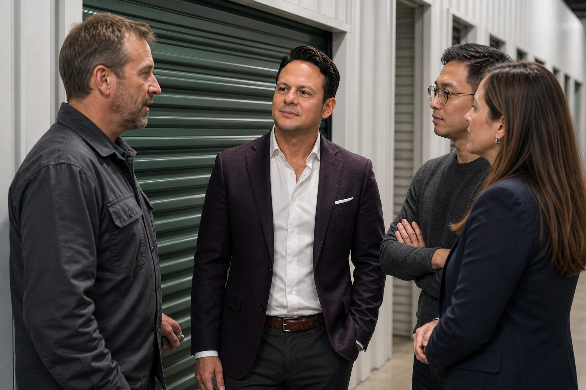

Responsible AI architecture note ·
An Override Is Not Ground Truth: Build a Label-Dispute Layer for Self-Storage AI
A label-dispute layer lets self-storage operators act on human overrides immediately while keeping verified labels, evaluation evidence and training eligibility under separate control.

Imagine a maintenance model marks a fictional roll-up door report as routine. A technician reviews the note, sees additional evidence and moves the work to urgent. The operating correction is appropriate: access is restricted and the work receives immediate attention.
Later, an analytics process collects every human override as a “correct answer” for the next training set. It records routine as the model’s error and urgent as ground truth. That shortcut may be wrong. The technician may have seen a later photo, applied a safety rule that was unavailable to the model, responded to a temporary condition or made a conservative decision while evidence remained incomplete. The override changed the work. It did not necessarily establish the label the model should have predicted from its earlier inputs.
That distinction needs its own architecture. A label-dispute layer separates the immediate operating disposition from the verified label that may be used for evaluation or learning. It keeps the facility moving without allowing every correction, escalation or exception to rewrite the meaning of the data.
Governed companion package
Use the 50-field AI Label-Dispute Register and inspect its evidence boundaries.
These exact files contain Jared Mastroianni's proposed label-dispute method, one blank template and four entirely fictional teaching records, plus the source, editorial and image-governance records. They do not establish a product feature, facility deployment, customer result, performance, certification, external validation or industry standard.
{kind=link}
One event can produce three different answers
A mature record keeps three questions separate.
- What did the model propose from the evidence it received? Preserve the input snapshot, task, model build, prompt or feature version, proposed label and time.
- What did the operator decide should happen now? Record the operating disposition, authority, reason and any restriction or escalation.
- What label was later verified for the defined evaluation task? Identify the reviewer, verification evidence, final label, scope and whether it is eligible for training.
Those answers can legitimately differ. A model can make the best prediction available at 9:02 a.m.; an operator can choose a safer response at 9:05; and a qualified review can determine at 2:00 p.m. that the original label was reasonable given the original evidence. The decision to act conservatively does not retroactively make the earlier evidence more complete.
The National Institute of Standards and Technology Artificial Intelligence Risk Management Framework notes that information about how often and why people overrule AI output can be useful to collect and analyze.1 The framework is voluntary and cross-industry. It does not prescribe a self-storage label-dispute system. It does support a key discipline: human intervention carries information that should be examined, not flattened into a binary score.
Classify the reason before changing the label
An override becomes useful learning evidence only after its cause is understood. Six reason classes prevent most false feedback.
Model error
The original evidence supported a defined label, but the model produced a different one. If a qualified reviewer confirms the evidence and task definition, the verified label may be eligible for evaluation or training.
Source-data error
The model received an incorrect facility, asset, timestamp, status or measurement. The operating correction belongs upstream first. Training on the corrected answer without fixing the source can teach the model to compensate for a data defect that still exists.
Missing evidence
The operator saw information that was not available at inference time. The later disposition can be right while the original prediction remains unscorable. The record should identify the missing evidence and preserve the gap as a coverage problem.
Policy or authority override
The model’s label may be accurate, but policy requires a different response. A low-risk observation might still receive manager review because of a customer complaint, active incident or local restriction. The operating decision should not be converted into a contradictory descriptive label.
Temporary operating constraint
Capacity, weather, vendor availability, access conditions or staffing may change what the team can do. Those conditions belong in scheduling and exception records. They do not redefine the underlying maintenance or customer state.
Unresolved dispute
Two qualified reviewers may interpret the evidence differently, or the governing evidence may be unavailable. The right training state is not “majority wins.” It is held until the label authority, evidence and task definition support a decision.
Put the dispute between workflow and learning
The safest architecture does not slow the operating correction. It inserts a controlled boundary after the current work is protected and before the override enters a metric, evaluation set or training set.
At inference time, the application creates an immutable reference to the model input and output. When a person changes the disposition, the workflow records the new operating state and the authority used. A separate dispute object links the original proposal, the operating action and the evidence available to each actor.
The review service then decides whether the original example is scorable. A verified label can be approved for one named task and versioned label definition. Training eligibility remains a separate decision. Some records are valuable for incident analysis but inappropriate for learning because they contain unresolved identity, missing evidence, protected information or a policy-only override.
The World Wide Web Consortium provenance model distinguishes entities, activities and agents and allows responsibility and derivation to be recorded across versions.2 A facility operator does not need to implement the full PROV model. The practical lesson is to preserve the original evidence, the intervention activity, the resulting record and the people or systems responsible for each step.
Measure intervention without punishing caution
A single “override rate” is a weak performance measure. It can rise because the model deteriorated, because employees became more attentive, because a new policy required review, because evidence coverage changed or because staff learned to record corrections that previously stayed invisible.
Useful measures keep the denominator and reason visible:
- proposals by task, facility, model build and evidence-coverage state;
- operating overrides by reason and consequence;
- disputes awaiting verification, including age and owner;
- scorable records by label definition and evaluation window;
- verified model errors separated from source, policy and coverage issues;
- training-eligible records compared with all interventions;
- corrections propagated to evaluation sets, training sets and published metrics.
The NIST AI Risk Management Framework connects trustworthy AI to the datasets, models, organizational behavior and human interactions around the system.1 Its Playbook provides voluntary suggestions across Govern, Map, Measure and Manage and warns that the material is not a one-size-fits-all checklist.3 For a self-storage portfolio, the local implication is simple: a human click is part of a socio-technical process, not an infallible label oracle.
A fictional door-review dispute
In a fictional portfolio, model build maint-7.3 reviews a manager note for Door D-14 at Harbor Pine Storage. From the evidence available at 9:02 a.m., it proposes routine_inspection. At 9:05, a technician sees a new image and reports heat plus an unusual odor near the motor housing. The technician restricts access and changes the operating disposition to urgent_qualified_review.
The label-dispute layer preserves both evidence times. It records missing_evidence_at_inference rather than immediately calling the model wrong. A qualified maintenance reviewer later confirms that the original note alone supported routine_inspection, while the later image and observation supported the urgent operating decision. The record is useful for testing evidence-arrival handling, but it is not eligible as a mislabeled original example.
A second fictional case is different. Model build access-4.1 classifies an access event against the wrong facility because an upstream mapping carries a retired site identifier. The manager corrects the facility and disposition. Review classifies the intervention as source_data_error, opens an identity correction and excludes the record from model evaluation. Again, the operating correction is real; the model-quality conclusion would be unsupported.
No facility, person, asset, model, deployment or result in these examples is real. The labels and times are teaching data, not evidence of industry performance.
The minimum review packet
The downloadable register keeps the inference, operating intervention, verification decision, eligibility and correction state in one reviewable record. This preview uses fictional record LABEL-FIC-001.
1. Identify the task and inference
- Dispute Id
- LABEL-FIC-001
- Record State
- teaching_record
- Fictional Example
- yes
- Facility Id
- FIC-HARBOR-PINE
- Facility Name
- Harbor Pine Storage
- Task Id
- FIC-MAINT-TRIAGE
- Task Definition Version
- maint-label-v3
- Work Object Id
- DOOR-D14
- Inference Id
- FIC-INF-1001
- Inference At
- 2026-09-09T09:02:00-04:00
2. Preserve original evidence and proposal
- Evidence Snapshot Ref
- evidence://fictional/maint/1001
- Evidence Available At Inference
- Manager note: door slows during close
- Model Provider Label
- Fictional Model Provider
- Model Build
- maint-7.3
- Prompt Or Feature Version
- prompt-maint-18
- Proposed Label
- routine_inspection
- Reported Confidence
- 0.78
- Operating Disposition
- urgent_qualified_review
- Operating Changed At
- 2026-09-09T09:05:00-04:00
3. Record the operating intervention
- Operating Actor Role
- fictional technician
- Operating Authority Basis
- fictional maintenance escalation procedure
- Operating Reason
- New image and direct observation changed the operating evidence
- Immediate Consequence
- Access restricted pending qualified review
- Evidence Added After Inference
- New image; technician reports heat and unusual odor
- Dispute Class
- missing_evidence_at_inference
- Dispute Opened At
- 2026-09-09T09:06:00-04:00
- Dispute Owner
- fictional AI quality owner
- Scorable State
- scorable_original_only
4. Verify the label and eligibility
- Label Definition Version
- maint-label-v3
- Verification Source
- Fictional qualified maintenance review
- Verification Evidence Time
- 2026-09-09T14:00:00-04:00
- Reviewer Role
- fictional qualified maintenance reviewer
- Verified Label
- routine_inspection
- Verified At
- 2026-09-09T14:10:00-04:00
- Evaluation Eligible
- yes
- Training Eligible
- no
- Eligibility Reason
- Original label was reasonable for original evidence; use for evidence-arrival evaluation not training correction
- Evaluation Dataset Version
- eval-maint-2026Q3
5. Propagate the correction
- Training Candidate Version
- Not set in fictional example
- Correction Required
- yes
- Correction Target
- evidence coverage and late-arrival handling
- Correction Reference
- FIC-CORR-1001
- Propagation State
- approved_pending_propagation
- Metric Recompute State
- pending
6. Bound retention and closure
- Retention Class
- operational_90_days
- Access Boundary
- maintenance review team
- Privacy Or Sensitivity Boundary
- Contains fictional operational detail only
- Closed At
- 2026-09-09T14:12:00-04:00
- Final State
- closed_with_coverage_correction
- Notes
- Fictional teaching data; no real facility model deployment incident or result
The downloadable AI Label-Dispute Register makes the separation operational. Each record includes:
- task and facility identity;
- the original evidence snapshot and inference time;
- model, prompt or feature versions;
- proposed label and confidence when the system exposes one;
- operating disposition, reason, authority and consequence;
- evidence added after inference;
- dispute class and scorable state;
- reviewer, verification source and verified label;
- evaluation and training eligibility as separate fields;
- dataset versions, propagation state and correction references;
- retention, access and privacy boundaries.
The register includes a blank template and four fictional teaching rows. A small operator can use the same structure in a controlled spreadsheet. A larger program can represent it as linked, immutable records. The architecture matters more than the storage format.
The NIST Generative Artificial Intelligence Profile recommends evaluating data quality and integrity, using structured feedback and considering the provenance of generated content.4 That profile is also voluntary and is not validation of this method. It reinforces the need to govern feedback as evidence with origin and scope rather than treating every response as a direct route into future behavior.
Close the correction loop deliberately
A verified dispute is not closed when the reviewer chooses a label. The owner must decide where the correction belongs. A model error may update an evaluation set and enter a governed training candidate. A source error belongs in the facility map or upstream system. A policy override may require no model change. Missing evidence may trigger a coverage improvement. An unresolved dispute stays excluded.
After an approved dataset change, record the new version, affected records, reviewer and effective time. Recompute only the metrics whose denominators or labels changed. Preserve the superseded result rather than silently rewriting history. If the example entered more than one dataset, propagate the correction to every governed descendant or mark the remaining copies as known stale.
The control is unnecessary when no AI label, score or recommendation is being evaluated or reused. It becomes important when an override can influence model performance reporting, future training, employee evaluation or consequential facility action.
Facility teams should be free to correct work quickly. Learning systems should be required to explain what they learned from that correction—and why they were allowed to learn it.
References
The accompanying source register records the exact supported use and material limits for each current primary or official source.
- National Institute of Standards and Technology, Artificial Intelligence Risk Management Framework (AI RMF 1.0), NIST AI 100-1, January 2023. https://nvlpubs.nist.gov/nistpubs/ai/NIST.AI.100-1.pdf ↩
- World Wide Web Consortium, PROV Model Primer, W3C Working Group Note, April 30, 2013. https://www.w3.org/TR/prov-primer/ ↩
- National Institute of Standards and Technology, NIST AI RMF Playbook, updated June 10, 2026. https://www.nist.gov/itl/ai-risk-management-framework/nist-ai-rmf-playbook ↩
- National Institute of Standards and Technology, Artificial Intelligence Risk Management Framework: Generative Artificial Intelligence Profile, NIST AI 600-1, July 2024. https://nvlpubs.nist.gov/nistpubs/ai/NIST.AI.600-1.pdf ↩